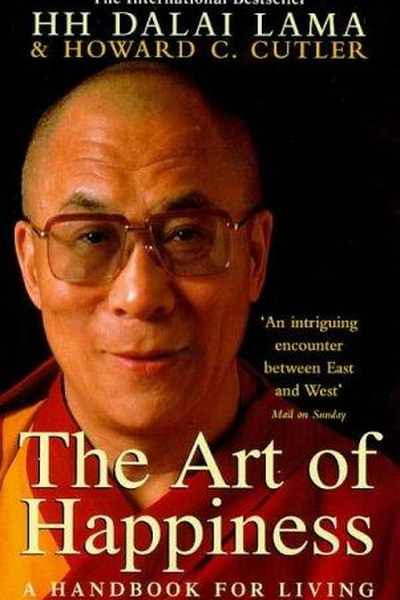

Library › Self-Improvement
The Art of Happiness — Summary & Key Lessons

A psychiatrist's conversations with the Dalai Lama on the science of wellbeing.
📖 OPEN THE FULL INTERACTIVE BREAKDOWN →🌐 Read it in Hindi, Hinglish, Gujarati, Tamil & 22 more languages — free, with audio.
💡 The Big Idea
The Dalai Lama's claim, tested against modern psychology: happiness is not a result of luck or wealth but a skill that can be developed through training the mind. The book covers the practical methods — cultivating compassion, managing desire, reframing suffering, and learning that our greatest freedom is the ability to choose our response. The central insight: if you want to be happy, train your mind like an athlete trains the body.
🧠 The 6 Key Lessons
Lesson 1: Happiness Is a Skill, Not a Fortune
The Right to Happiness
The Dalai Lama's opening claim: every being wants happiness, and it is achievable through training — like any skill. Cutler connects this to psychology's finding that circumstances explain only a fraction of our happiness; the rest is how we process them. The lesson: stop waiting for the right conditions; start training the right habits.
📖 Example: Two people with similar lives report very different happiness — the difference is attention and interpretation, which are trainable. The practical edge: 'happiness is a skill, not a fortune' is not a one-time decision — it's a habit that compounds with every… Read the full example →
⚡ Do this: Treat happiness as a practice: schedule 10 minutes daily for one happiness-building exercise (gratitude, meditation, kindness).
Lesson 2: Compassion Is the Fastest Route to Your Own Happiness
The Source
The Dalai Lama's most repeated teaching: genuine compassion for others is the most reliable source of personal happiness. Self-centeredness isolates; compassion connects, and connection is what humans are wired to thrive on. The practice: start with small acts of kindness and expand the circle gradually.
📖 Example: Studies cited in the book show that helping others produces reliable mood boosts — the giver's happiness is the first beneficiary. Here's the part that usually gets missed: 'compassion is the fastest route to your own happiness' works quietly. You won't see… Read the full example →
⚡ Do this: Do one deliberate act of compassion daily for a week — and note how it changes your own state.
Lesson 3: Desire Is the Root of Restlessness
The Management of Desire
The book's Buddhist core: unhappiness comes less from lacking things than from wanting things we don't have. Desire itself isn't wrong — the problem is when it becomes restless craving that devalues what we already possess. The method: learn to distinguish needs from cravings, and practice contentment without losing ambition.
📖 Example: The person who finally gets the promotion immediately starts wanting the next one — the craving was the problem, not the lack. The real test of this lesson is a bad day: the principle that survives a crisis, a tight deadline and a doubting colleague is the… Read the full example →
⚡ Do this: For one day, notice every craving (object, status, distraction) and ask: is this a need or a craving? Observe the pattern.
Lesson 4: Suffering + Reframing = Growth
The Transformation
The Dalai Lama doesn't deny suffering; he reframes it. Pain is inevitable, but the meaning we attach to it is a choice. Difficulties become teachers, and this reframe converts suffering from an enemy into a curriculum. The practical tool: when pain arrives, ask what it is teaching, and use it to deepen compassion for others who suffer.
📖 Example: A serious illness or setback can either embitter or deepen a person — the difference is the interpretation they choose. In practice, 'suffering + reframing = growth' shows up in tiny daily choices long before it shows up in outcomes — the choice is… Read the full example →
⚡ Do this: Take one current difficulty and write it as a lesson: what is it training in you? Reframe it deliberately.
Lesson 5: Your Response Is Your Last Freedom
The Choice
Drawing close to Frankl's insight, the Dalai Lama argues that while we can't always control events, we always retain control over our response — and that response determines the experience. This is the ultimate inner freedom: no external situation can fully take away your choice of attitude.
📖 Example: Two people in the same adverse situation respond completely differently — one shattered, one composed — because response, not circumstance, defines the experience. Most people nod at this principle and change nothing. The gap between agreeing and acting is… Read the full example →
⚡ Do this: Pick one situation where you feel powerless. Identify the one response you can still choose — and choose it deliberately.
Lesson 6: Train the Mind Like an Athlete
The Practice
The book's final message: mental training requires the same repetition as physical training. One insight doesn't change you; a thousand repetitions do. Meditation, compassion practice and gratitude are not beliefs — they are exercises. The Dalai Lama's personal practice is decades of daily repetition, which is why his calm is real and not performed.
📖 Example: Just as a runner builds stamina through daily miles, the mind builds resilience through daily mental reps. The uncomfortable truth about this lesson: it requires doing the boring version first — the unglamorous reps that nobody claps for. Read the full example →
⚡ Do this: Choose one mental exercise (meditation, gratitude, compassion) and commit to 10 minutes daily for 30 days. Measure the difference.
✅ 5-Step Action Plan
- Schedule 10 minutes daily for one happiness practice.
- Do one deliberate act of compassion daily for a week.
- Track your cravings for one day — needs vs cravings.
- Reframe one current difficulty as a lesson.
- Commit to 30 days of one daily mental exercise.
⚠️ When This Doesn't Work
The Dalai Lama's methods are powerful — and they presume a baseline of safety that not everyone has. Telling someone in an abusive situation to 'manage desire and reframe suffering' can become spiritual bypass — using inner work to avoid the outer action required (leaving, fighting, changing the system). The caveat: inner peace is a resource for action, not a substitute for it. The book's tools work best after the threat is handled; using them to tolerate the intolerable is not enlightenment, it's accommodation wearing robes.
💀 The Graveyard Proves It
🎾 Boris Becker — From Wimbledon to Prison. Burn: $50M+ and his freedom. Read the full case study →
💬 Best Quotes from The Art of Happiness
- “Happiness is not something ready made. It comes from your own actions.”
- “If you want others to be happy, practice compassion. If you want to be happy, practice compassion.”
- “The purpose of our lives is to be happy.”
Interactive version: mark lessons as read, listen in your language, share quote cards.